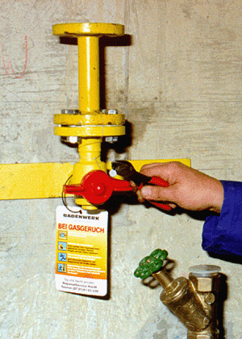

Absperreinrichtungen sichern
Absperreinrichtungen von Gasleitungen sind z. B. durch Abnehmen des Handrades, Schlüssels oder Ventilgriffes zu sichern.
 |

Absperreinrichtungen von Gasleitungen sind z. B. durch Abnehmen des Handrades, Schlüssels oder Ventilgriffes zu sichern.
|